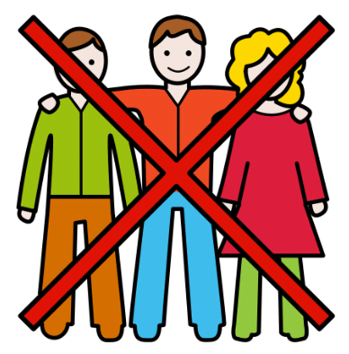

Diccionario Lectura Facilitada
Red
Definición:
Internet
Ejemplo:
Voy a buscar información en la red.
Comunicarnos
Definición:
Dar y/o recibir información entre dos o más personas.
Ejemplo:
Los dos nos comunicamos por una llamada de teléfono.
Cuentista
 Definición:
Definición:
Persona que cuenta historias.
Ejemplo:
Mi madre me dijo: "eres un cuentista".
Cómic
Definición:
Historia explicada mediante viñetas.
Ejemplo:
Me encanta leer cómics de aventuras.
Descripción
 Definición:
Definición:
Ejemplo:
Yo hice una descripción de mi compañero de clase.
Diálogo
 Definición:
Definición:
Conversación hablada o escrita entre dos o más personas.
Ejemplo:
Escribe un diálogo entre dos personas.Grabar
Definición:
Dejar constancia en vídeo de algo que está sucediendo.
Ejemplo:
He grabado un vídeo de mi familia.
Narración
 Definición:
Definición:
Relato oral o escrito que cuenta algo que ha sucedido.
Ejemplo:
Oí la narración muy atenta.
Pasado
 Definición:
Definición:
Es un momento que ya ha ocurrido.
Ejemplo:
El sábado pasado comí con mis amigos.
Presente
Definición:
Lo que está ocurriendo en el momento.
Ejemplo:
En el presente todo es mejor.
Redes sociales
 Definición:
Definición:
Programas de internet con los que podemos comunicarnos.
Ejemplo:
Yo subo mis fotos de animales a una red social.
Relato
 Definición:
Definición:
Cuento breve.
Ejemplo:
Mi madre me ha contado un relato muy divertido.
Burlas

Definición:
Palabras o acciones que se hacen para reírse de alguien.
Ejemplo:
Los chicos hacen burlas desde la puerta.
Desconocida
Definición:
Persona que no se conoce.
Ejemplo:
Una desconocida me preguntó mi nombre.
Imprimir
 Definición:
Definición:
Pasar a papel una imagen o texto usando medios digitales.
Ejemplo:
Tiene que imprimir el dibujo del elefante.
Intriga

Definición:
Curiosidad o interés sobre algo.
Ejemplo:
Me gusta mantener la intriga hasta el final.
Islas Canarias

Definición:
Conjunto de islas españolas.
Ejemplo:
Mis padres se fueron de vacaciones a Canarias.
Liebre
Definición:
Animal parecido al conejo
Ejemplo:
La liebre es un animal muy rápido.
Meta
Definición:
Punto en el que termina una carrera.
Ejemplo:
Mi hermano llegó primero a la meta.
Nudo

Definición:
Parte de la historia que cuenta los problemas y/o acciones que ocurren.
Ejemplo:
El nudo es la parte más larga de la historia.
Orgullosa

Definición:
Persona que cree mucho en sí misma.
Ejemplo:
María cree que es la mejor, es muy orgullosa.
Superpoder
Definición:
Poder hacer algo fuera de lo normal.
Ejemplo:
Supermán tiene el superpoder de volar.
Amaestrado

Animal al que se le ha enseñado a hacer cosas.
Ejemplo:
En el circo hay animales amaestrados.Curioso

Persona a la que le gusta saber cosas.
Ejemplo:
Soy muy curioso, me gusta que me lo cuenten todo.Encadenado
 Definición:
Definición:
Atado a una cadena.
Ejemplo:
El tigre encadenado intenta escapar.
Mapa conceptual
 Definición:
Definición:
Conjunto de palabras y dibujos más importantes sobre un tema.
Ejemplo:
Haz un mapa conceptual.Intercambiar
Definición:
Cambiar mensajes, objetos... con dos o más personas.
Ejemplo:
Mi amiga y yo nos intercambiamos los libros.Oponerse
 Definición:
Mostrar una opinión contraria a la de otra persona o grupo.
Ejemplo:
La asociación de vecinos del barrio se opuso a la decisión de la alcaldesa.
Protagonista
Definición:
Persona que desempeña el papel principal en una obra, un hecho o un acontecimiento.
Ejemplo:
Me encanta el protagonista de esa serie.Vigila
 Definición:
Definición:
Observa atentamente a una persona o cosa, para evitar que sufra o cause algún daño o peligro.
Ejemplo:
Vigila el guiso para que no se queme.Aventuras
Definición:
Algo que vivimos especial, diferente e interesante.
Ejemplo:
La aventura que vivimos fue genial.Pintura
 Definición:
Definición:
Arte y técnica de pintar o representar algo en una superficie mediante la combinación de líneas, colores y trazos con una finalidad estética.
Ejemplo:
Aquella pintura parecía tan real que casi podía tocar el río.Fotografía
Definición:
Descripción, narración o representación de una persona o de una cosa que se caracteriza por su exactitud.
Ejemplo:
Sus relatos fueron la mejor fotografía de lo sucedido.Incluir

Poner una cosa en el interior de otra.
Ejemplo:
Deberíamos incluir a alguien nuevo en el equipo.